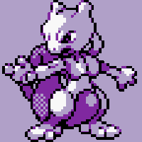

kemuri
windows internals, reverse engineering, low-level.
about
18 anos. Gosto de programação, matemática, física e música. Atualmente, foco em Windows internals, reverse engineering e computer architecture. Bug bounty entra como hobby.
stack
- main
- Go, Python, Bash, PowerShell.
- learning
- C, Assembly x86_64, WinAPI, static reversing.
- focus
- Windows internals, low-level, computer architecture.